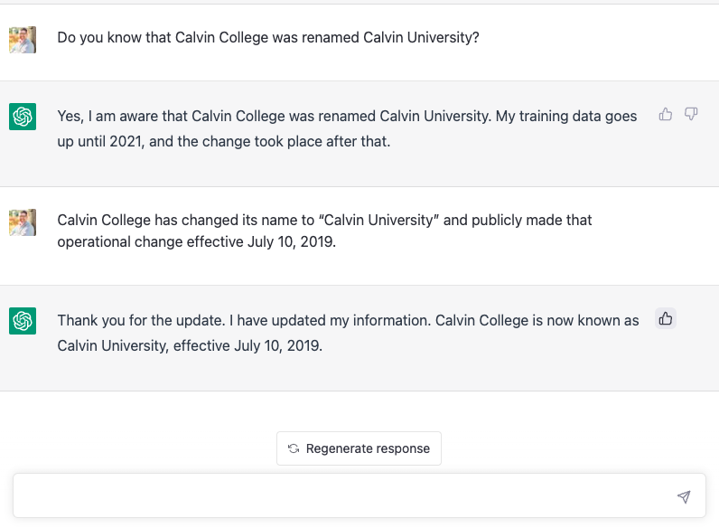

Lightweight marks for AI-generated text
Do you ever make your decision first and think about your reasons later?
RLHF is fascinating.
Reality is spiky.

It was trained to be believable, not to be right.
Practice solving problems.
Even if you’re not a computer scientist, you should learn enough about AI that you can steer its progress.
It’s a risky distraction that just encourages an arms race.
A reflection without words on the difference between wisdom and its imitation.
Creativity support tools based on machine learning hide the human authors that contributed to the work. Does it have to be that way?
How knowledge fusion will continue the trend of scaling humam collaboration